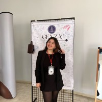
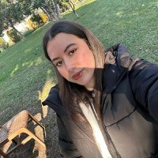

Meet Our Team
The driving force behind the Interdisciplinary Project Society.

Furkan Akosman
Interested in AI and machine learning. As President, I oversee all society operations and guide our strategic direction.

Zeynep Torbacı
Passionate about biotech and sustainability. I support the President and manage internal affairs.

Ömer Faruk Dokgöz
Love UI/UX and human-centered design. I lead project teams from ideation to completion.

Efnan Karataş
Fintech enthusiast. I manage finances, budgeting, and sponsorship outreach.

Ömer Efe Merey
Fascinated by cognitive science. I handle records and internal communications.
Sudem Özdemir
I manage social media, newsletter, and external communications.
Yiğit Buyrul
I build relationships with organizations and partners.
Sena Özbey
Maintain and update the IPS website.
Rümeyse Güçlü
Branding and visual identity.

Yusuf Mete Geçer
Maintain and update the IPS website.
Ubeyde Acar
Maintain and update the IPS website.
Yeşim Aydın
Maintain and update the IPS website.

Erkan Kalam
Maintain and update the IPS website.